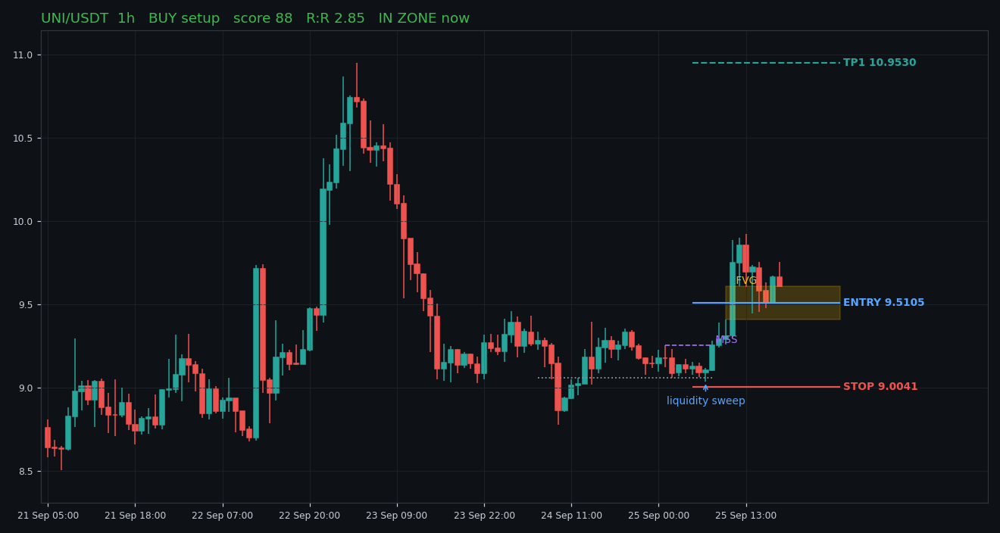
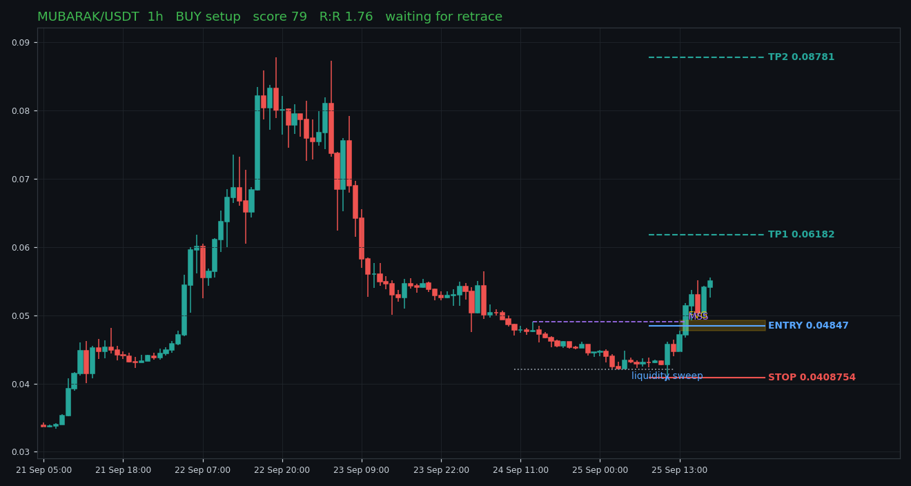
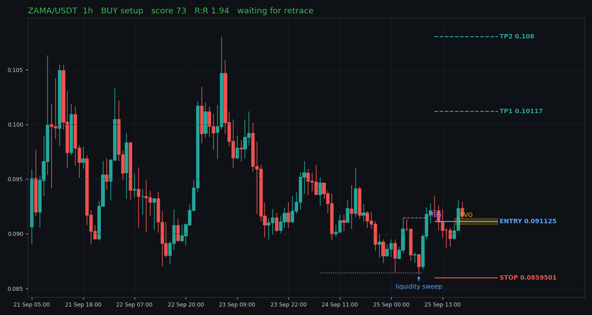
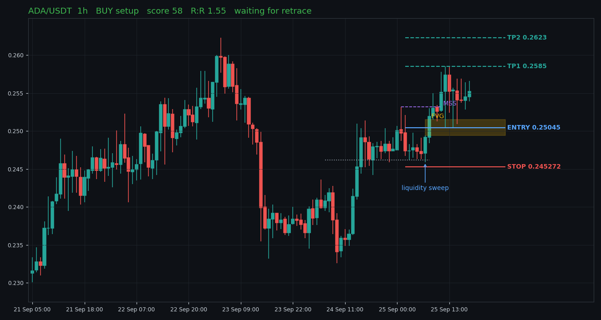
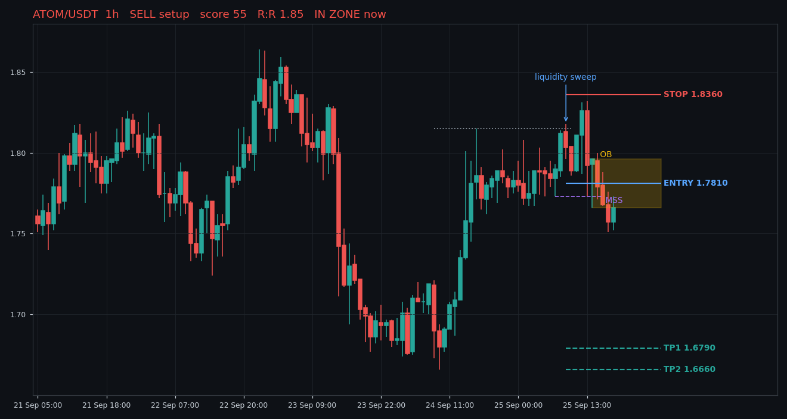

Research aid only, not financial advice. Limit-order style entries; stop is beyond the sweep.
Start the server (run_daily.bat) to see live P/L.
5 setups tracked · pending 5 · open 0 · closed 0 · expired 0
No closed trades yet. Results build up as setups play out.
| Added | Coin | TF | Side | Score | Entry | State | R |
|---|---|---|---|---|---|---|---|
| 2026-09-25 22:12 | UNI | 1h | BUY | 88 | 9.5105 | pending | |
| 2026-09-25 22:12 | ZAMA | 1h | BUY | 73 | 0.091125 | pending | |
| 2026-09-25 22:12 | ATOM | 1h | SELL | 55 | 1.781 | pending | |
| 2026-09-25 21:48 | MUBARAK | 1h | BUY | 79 | 0.04847 | pending | |
| 2026-09-25 21:48 | ADA | 1h | BUY | 59 | 0.25045 | pending |
None right now.

Swept sell-side liquidity at 9.0580 and closed back above it, then broke structure at 9.2540. Entry at the FVG (9.4100-9.6110). 1D bias: bull. In discount.

Swept sell-side liquidity at 0.04206 and closed back above it, then broke structure at 0.04906. Entry at the FVG (0.04773-0.04921). 1D bias: bull. In discount.

Swept sell-side liquidity at 0.08643 and closed back above it, then broke structure at 0.09146. Entry at the FVG (0.09084-0.09141). 1D bias: bull. In discount.

Swept sell-side liquidity at 0.2462 and closed back above it, then broke structure at 0.2532. Entry at the FVG (0.2494-0.2515). 1D bias: bull. Not in ideal half of range.

Swept buy-side liquidity at 1.8150 and closed back below it, then broke structure at 1.7730. Entry at the OB (1.7660-1.7960). 1D bias: bull. In premium.